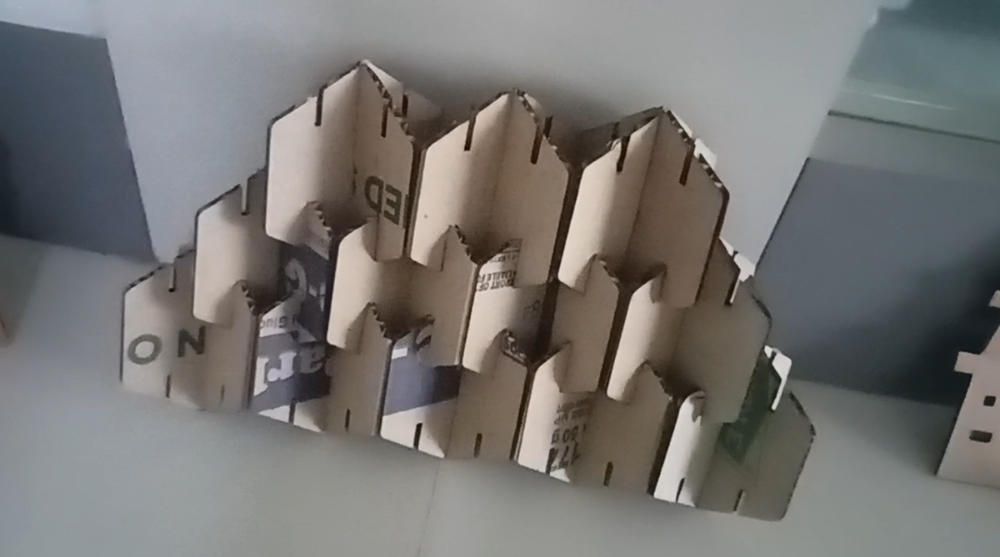
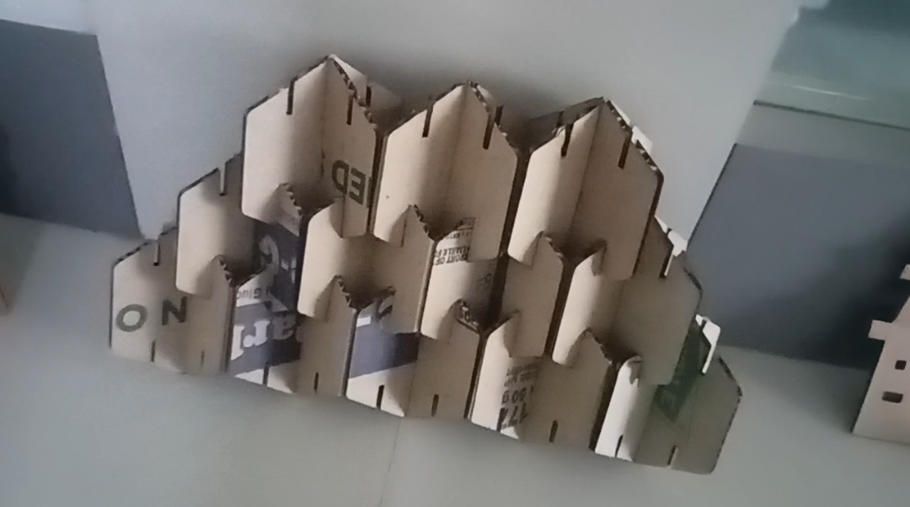

Moudule no. 3 i.e Computer Aided Cutting inculdes cutting of different 2D shapes out of sheets ,
made of different materials like MDB,Cardboard,acrylic and many more.
Here we can either create our own designs using softwares like autocad and fusion360 (learned in module 2)
or we can take references from internet.
You just have to make sure that the format of your design is sutaible of rendering.
After creating your design you have to render it on the software which is LaserCAD.
LaserCAD renders the file or the design before it has too be cutted
so as to check if the design is proper or is there something error in it.
In LaserCAD we can modify its(design) boundries and
we can also set the speed and power of the laser that has been using for actual cutting.
The speed and power varies according to the materials from which designn has to be cut.
And at last we have to send the design to the actual cutting machine where we can performe the tasks.
But before using it we must know about the machile ;about its use and danger that can be caused by it.
The laser used in here is made up of C02 and it should be keep closed while removing and adding sheets in the container
else it will burn your hand and in seveire cases it may cut your hand.

 
